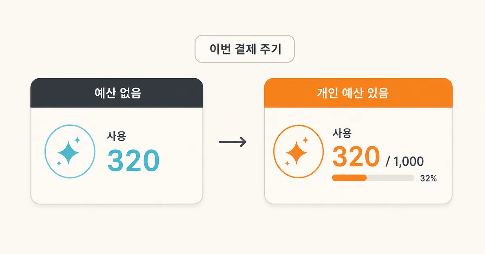
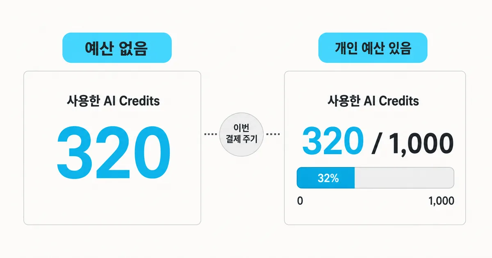
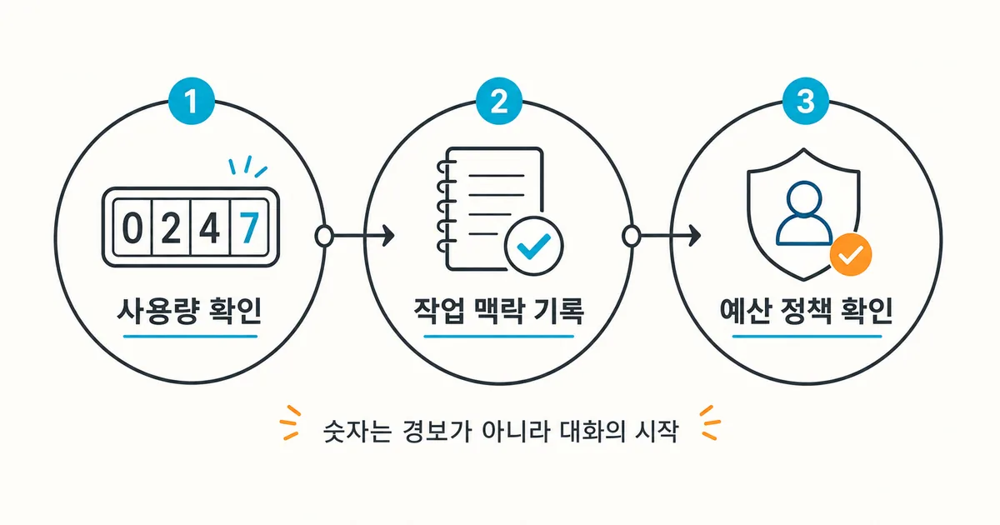

2026. 7. 21 (화) · 약 10분
팀에서 GitHub Copilot을 쓰는데 개인 예산이 없으면 ‘내가 이번 결제 주기에 얼마나 사용했는지’ 확인하기가 애매했다. 예산 대비 퍼센트는 기준이 없고, 조직 전체 비용만으로는 내 작업량을 분리하기 어렵기 때문이다. GitHub가 이 빈칸을 메웠다. Copilot Business·Enterprise 사용자는 개인 예산이 없어도 설정의 Copilot 사용량 페이지에서 이번 결제 주기에 쓴 AI Credits 총량을 볼 수 있다. 다만 숫자가 보인다는 것과 추가 비용이 발생했다는 것은 같은 뜻이 아니다. 사용량, 조직의 공유 풀, 개인 예산을 구분해서 읽어야 이 변화가 실제 비용 관리에 도움이 된다.

오늘의 핵심뉴스
심층 분석 · GitHub Changelog · 2026. 7. 21
GitHub Copilot, 결제 주기별 AI Credits 사용량 표시 지원
GitHub는 개인 예산이 없는 Copilot Business·Enterprise 사용자도 설정의 Copilot 사용량 페이지에서 이번 결제 주기에 사용한 AI Credits 총량을 볼 수 있게 했다. 개인 예산이 있으면 사용량과 예산 한도를 함께 표시한다.
무엇이 바뀌었나: 예산이 없어도 숫자가 보인다
GitHub는 7월 20일 Copilot Business와 Copilot Enterprise 사용자의 사용량 표시를 바꿨다. 개인 예산이 없는 사용자는 비교할 한도가 없어서 예산 대비 퍼센트만으로 실제 소비 규모를 읽기 어려웠다. 이제 GitHub 설정의 Copilot 사용량 페이지를 열면 현재 결제 주기에 사용한 AI Credits 총량을 확인할 수 있다. 개인 예산이 설정된 사용자는 사용한 크레딧과 전체 예산을 함께 본다. 즉 ‘한도가 없으니 사용량도 알 수 없음’이던 화면이 ‘한도와 별개로 실제 사용량은 확인’하는 구조로 바뀐 것이다.

AI Credits와 예산은 같은 것이 아니다
AI Credits는 Copilot의 에이전트·채팅 같은 사용량 기반 기능을 계산하는 단위다. 모델과 입력·출력·캐시 토큰 수에 따라 소비량이 달라지며 1 AI Credit은 미화 0.01달러로 환산된다. 반면 개인 예산은 한 사용자의 추가 사용을 어디까지 허용할지 정하는 제어 장치다. 사용 크레딧은 이미 발생한 관측값이고, 예산은 앞으로의 사용을 제한하는 정책이다. 사용량 320이 보인다고 곧바로 3.20달러가 추가 청구됐다고 판단하면 안 된다. 조직에 포함된 공유 크레딧 안에서 처리됐을 수도 있기 때문이다.
| 상태 | 사용자에게 보이는 값 | 의미 |
|---|---|---|
| 개인 예산 없음 | 이번 결제 주기의 사용 AI Credits 총량 | 실제 사용 규모를 확인하는 기준 |
| 개인 예산 있음 | 사용 AI Credits와 예산 한도 | 한도 대비 소비와 남은 여지를 확인 |
| 조직 정책 확인 필요 | 표시 값만으로는 알 수 없음 | 공유 풀·추가 사용·승인 정책은 관리자 설정을 확인 |
| 구분 | 2026년 기준 | 읽을 때 주의할 점 |
|---|---|---|
| AI Credit 단가 | 1크레딧 = 미화 0.01달러 | 사용량 환산 기준이며 곧바로 추가 청구액을 뜻하지 않음 |
| 월 기본 포함량 | Business 1,900 · Enterprise 3,900 | 좌석별 수량을 결제 주체 단위의 공유 풀로 합산 |
| 2026년 프로모션 | 6월 1일~9월 1일 Business 3,000 · Enterprise 7,000 | 기간 종료 후 기본 포함량으로 복귀 |
| 미사용 크레딧 | 다음 달 이월 없음 | 매월 1일 00:00 UTC에 공유 풀 재설정 |
결제 주기와 시차를 함께 봐야 하는 이유
숫자를 볼 때는 화면을 연 날짜만 보면 안 된다. GitHub Copilot의 결제 주기는 같은 계정의 다른 라이선스 기반 제품과 같은 주기를 쓰며 UTC를 기준으로 계산된다. 예를 들어 결제 주기가 매월 1일 시작이라면 7월분은 7월 1일 00:00 UTC에 시작한다. 한국 시간으로는 오전 9시다. 월말·월초에 좌석이나 예산을 바꿨다면 한국 시간과 UTC의 날짜가 다를 수 있으므로, 사용량이 기대와 다를 때는 결제 주기의 시작·종료 시각과 정책 변경 시점을 같은 시간대로 맞춰 봐야 한다.
기본 제공 크레딧도 개인별 주머니처럼 따로 쌓이지 않는다. Copilot Business와 Enterprise는 좌석별 포함량을 결제 주체 단위의 공유 풀로 합산한다. 한 사람이 적게 쓰면 다른 사람의 사용 여지가 커질 수 있고, 남은 크레딧은 다음 달로 넘어가지 않는다. 따라서 개인 화면의 사용량은 ‘내가 조직 풀에서 얼마나 사용했는지’에 가까우며, 조직 전체의 남은 크레딧이나 예상 청구액은 관리자 화면과 정책을 함께 봐야 판단할 수 있다.
숫자를 본 뒤에는 작업 맥락을 붙인다
사용량이 늘었다는 사실만으로 낭비라고 결론 내릴 수는 없다. 긴 코드 검토, 큰 저장소 탐색, 에이전트 작업, 고성능 모델 선택처럼 작업 성격이 달라지면 입력·출력 토큰과 소비량도 달라진다. 반대로 유료 플랜의 코드 자동완성과 다음 편집 제안은 AI Credits 과금 대상이 아니다. 우선 이번 주기에 집중적으로 했던 작업을 세 갈래 정도로 나누어 기록하고, 사용량 화면의 숫자 변화와 비교해 보자. 그래야 어떤 기능과 작업이 크레딧 증가에 영향을 줬는지 설명할 수 있다.
예를 들어 사용량이 320에서 800으로 늘었다면 먼저 그 기간에 에이전트로 큰 저장소를 분석했는지, 평소보다 긴 대화를 했는지, 다른 모델을 선택했는지 확인한다. 그다음 관리자에게 조직 공유 풀의 잔량과 추가 사용 허용 여부를 묻는다. 추가 사용이 차단된 조직은 풀이 소진되면 다음 주기까지 사용이 제한될 수 있고, 허용된 조직은 포함량을 넘긴 부분이 추가 청구될 수 있다. 개인 예산이 있다면 조직 풀에 여유가 남아도 사용자 한도에서 멈출 수 있다.

설정 전에 확인할 범위와 한계
이번 공지는 개인 예산이 없는 Copilot Business·Enterprise 사용자에게 결제 주기별 사용량을 보여 주는 화면 변경이다. 요금이나 기본 포함량이 새로 바뀌었다는 발표가 아니며, 모든 Copilot 요금제와 관리자 화면에 같은 표시가 생겼다는 뜻도 아니다. 특히 사용자 화면의 총량만으로 공유 AI Credits 풀의 잔액, 추가 사용 허용 여부, 팀의 승인 절차까지 판단할 수는 없다. 정확한 정책은 조직의 GitHub 관리자와 사용량 기반 과금 문서에서 확인해야 한다.
따라서 이 숫자는 비용 통제 기능보다 관측 기능으로 보는 편이 정확하다. 사용량이 보이기 시작해도 예산을 자동으로 만들거나 초과 사용을 자동 차단하지 않는다. 예산이 없는 상태를 유지할지, 개인별 한도를 둘지, 공유 풀을 넘긴 추가 사용을 허용할지는 조직이 따로 결정해야 한다. 화면 변화와 정책 변화를 분리해서 읽으면 ‘숫자가 늘었으니 바로 과금됐다’는 오해를 피할 수 있다.
오늘 확인할 체크리스트
- GitHub 설정의 Copilot 사용량 페이지에서 현재 결제 주기의 AI Credits 총량을 확인한다.
- 개인 예산이 있는지, 있다면 사용량과 한도가 함께 표시되는지 확인한다.
- 결제 주기 경계를 UTC 기준으로 확인해 한국 시간의 월말·월초 작업과 구분한다.
- 사용량이 늘어난 기간의 작업 유형과 선택한 모델을 짧게 기록한다.
- 공유 풀, 추가 사용, 승인·차단 조건은 조직 관리자에게 확인한다.
- 다음 결제 주기에도 같은 시점에 숫자를 확인해 변화만 비교한다.
참고한 자료
이번 변경의 핵심은 새로운 비용을 만든 것이 아니라 보이지 않던 사용량을 보여 준 데 있다. 먼저 이번 결제 주기의 실제 크레딧을 확인하고, 늘어난 시점의 작업과 선택한 모델을 붙여 보자. 그다음 조직의 공유 풀과 추가 사용 허용 여부를 관리자에게 확인하면 숫자를 막연한 경보가 아니라 다음 결제 주기의 예산과 작업 방식을 조정하는 근거로 쓸 수 있다.